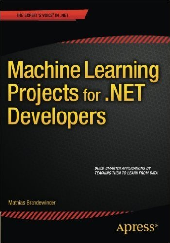
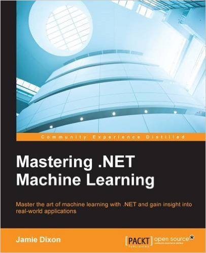

Machine Learning With F#

Grigoriy Belenkiy
Software engineer, S&P Global
@grishace
//denver/dev/day
June 24, 2016
Agenda
- Machine Learning
- Toolkit
- Linear regression
- Logistic regression
- Clustering
- Neural networks
Machine Learning
- explores the study and construction of algorithms that can learn from and make predictions on data
- focuses on prediction, based on known properties learned from the training data
- spam filtering, OCR, search engines, and computer vision
Toolkit
- R (+R Tools for Visual Studio, SQL Server 2016 R Services)
- MATLAB (+GNU Octave)
- Python (scikit-learn, pandas, numpy, Jupyter notebook)
BIG players
- Azure ML
- TensorFlow
- FBLearner Flow
- Amazon Machine Learning(AWS)
.NET Framework
- Accord.NET
- Math.NET Numerics
- Numl
- Encog
Supervised Learning
- Linear regression
- Logistic regression
Linear Regression
Logistic Regression
Unsupervised Learning
'
Supervised Learning (continued)
XOR

Books
|  |
 |
 |
Machine Learning Projects for .NET Developers
by Mathias Brandewinder |
Mastering .NET Machine Learning
by Jamie Dixon |
Machine Learning Using C# Succinctly
by James McCaffrey |